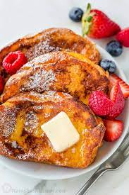

French Toast

The Super Sweet French Toasts
Ingredients
- 180g (¾ cup) egg whites
- 2 slices of bread
- 2 packets (~1 tbsp) sweetener
- 1 tsp cinnamon
- 5g (1 tsp) vanilla extract
- Cooking spray
Directions
- n a bowl, add egg whites, sweetener, cinnamon, and vanilla extract. Whisk until spices are evenly distributed throughout the mixture.
- Heat a griddle over low-medium heat. Spray griddle with cooking spray.
- Dip bread slices into egg white mixture, and transfer to pan.
- Spoon any leftover egg white mixture on to the bread in the pan. If done slowly, the bread should absorb the mixture and get fluffy.
- Let cook for about 3-4 minutes on each side.
- Remove French toast from the pan and serve on a plate with toppings. Suggestions for toppings are fresh fruit and low calorie syrup.